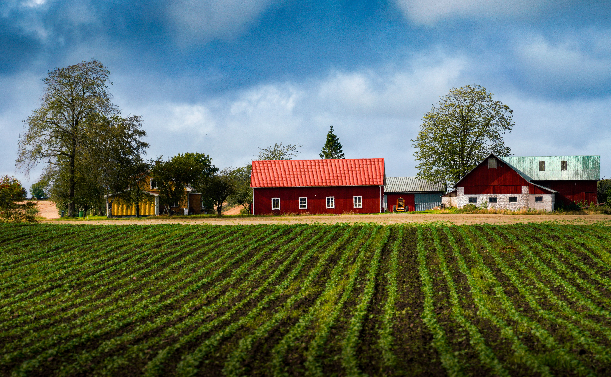
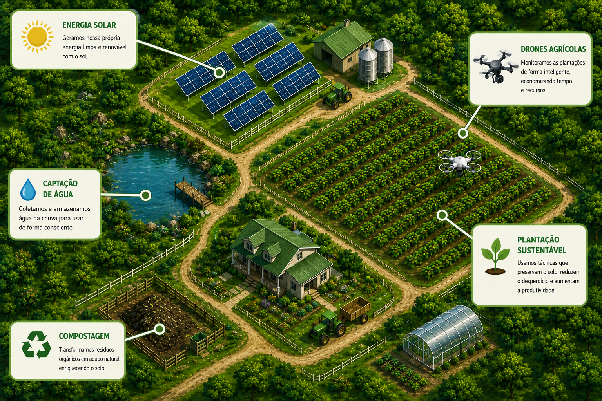

Colhendo Sustentabilidade
Tecnologia, inovação e preservação para o futuro do campo.
Bem-vindo ao Campo Sustentável
O projeto Colhendo Sustentabilidade mostra como a agricultura pode produzir alimentos de forma eficiente sem prejudicar o meio ambiente. Através da tecnologia e de práticas sustentáveis, é possível garantir um futuro melhor para todos. No nosso site, você poderá aprender como equilibrar produção e meio ambiente através de exemplos práticos e de simulações em uma fazenda digital.
Conheça a Fazenda
🌱 Plantação Sustentável
Uso consciente do solo e da água.
☀️ Energia Solar
Produção de energia limpa e renovável.
💧 Captação de Água
Reutilização da água da chuva.
🚁 Drones Agrícolas
Monitoramento inteligente das lavouras.
🌳 Preservação Ambiental
Proteção das áreas verdes e da biodiversidade.
Mapa da Fazenda Sustentável

Simulador da Fazenda
Pontuação de Sustentabilidade:
50
Como reduzir os custos de energia da fazenda?
Como melhorar a irrigação da lavoura?
Como acompanhar a saúde das plantações?
Como reduzir prejuízos causados por pragas?
Como manter a produtividade do solo?
Como garantir água para períodos secos?
Quiz do Campo Sustentável
Pontuação: 0
Tecnologias do Futuro
🚁 Drones
Monitoram plantações em tempo real.
☀️ Energia Solar
Produz energia limpa para a fazenda.
🤖 Inteligência Artificial
Ajuda na previsão de colheitas.